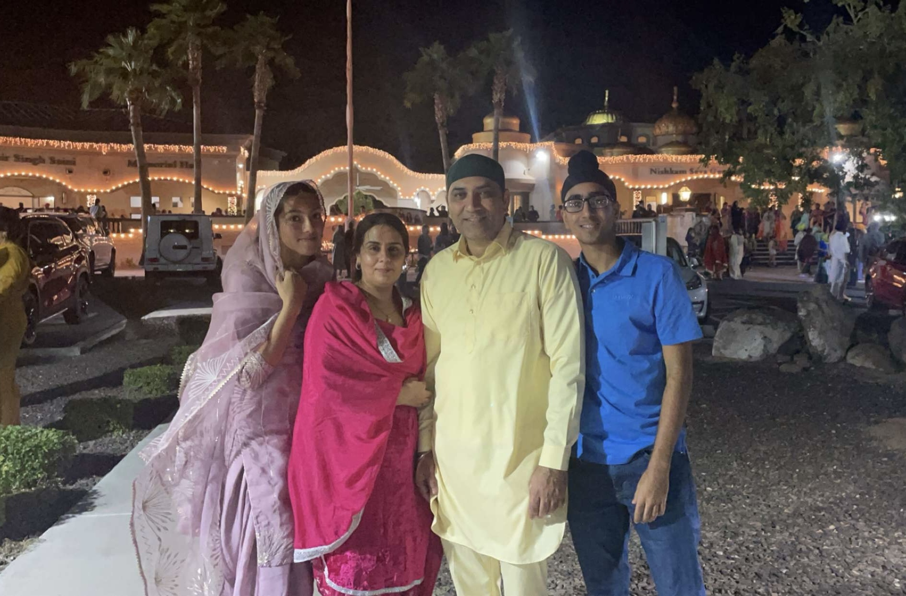
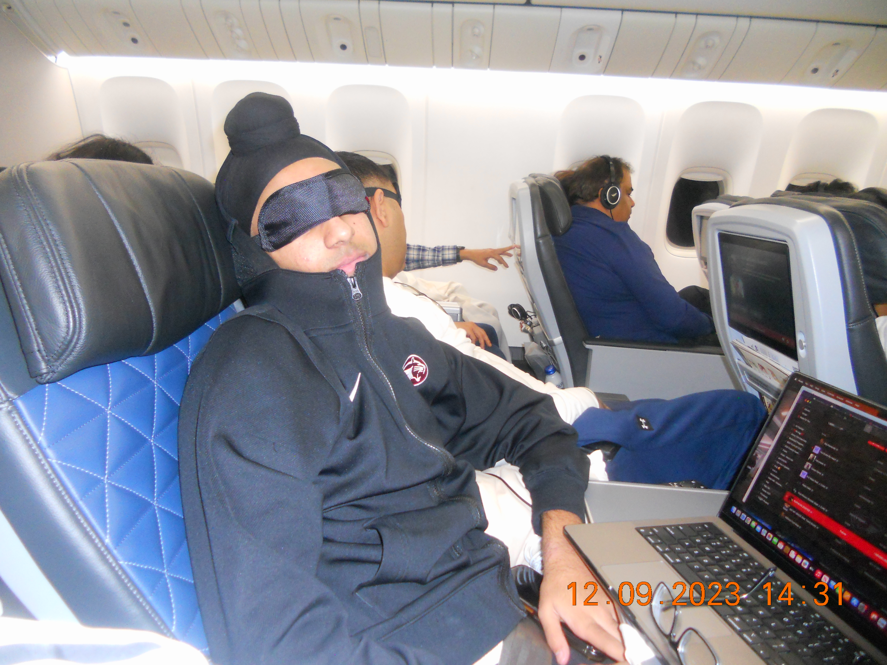
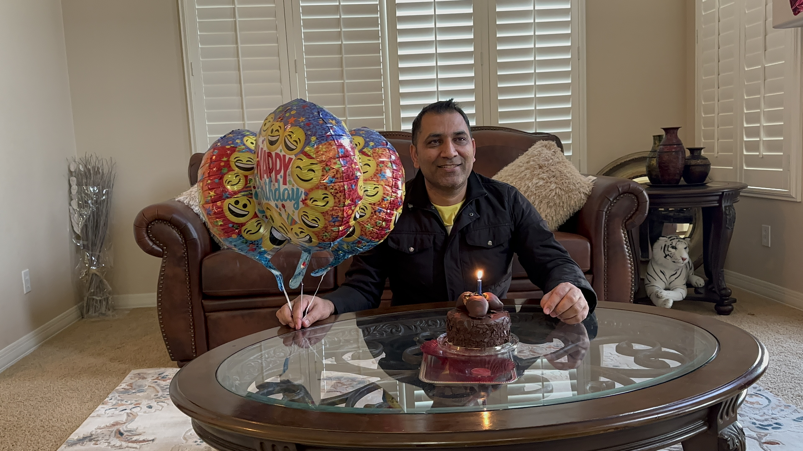
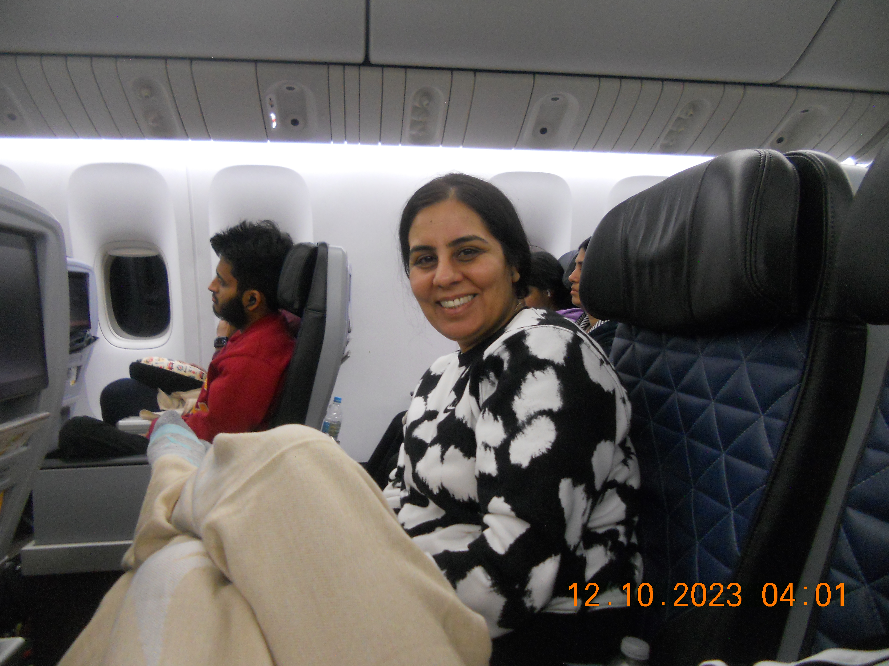

Welcome to the vibrant world of the Singh Family
Step into the lively world of the Singh Family – a family of four, each with their own interests and quirks. Juvi, the son, brings energy to the house with his love for basketball and video games. Meanwhile, Puneet, the daughter, is diligently pursuing her studies at ASU, adding an academic touch to the family dynamic.
Balwinder, the multitasking mom, effortlessly manages working from home while infusing creativity into daily activities. On the other hand, Kuldeep, the dad, finds joy in his government job and unwinding with a good movie. Together, the Singh Family weaves a harmonious blend of individual pursuits, creating a warm and inviting home atmosphere.
Together, the Singh Family embodies the richness of diversity within unity, each member contributing a unique thread to the family tapestry. Through shared laughter, common goals, and individual pursuits, they create a warm and inviting home that reflects the beauty of familial bonds. Welcome to the world of the Singh Family, where love, passion, and individuality harmoniously coexist.
Scroll around and learn about the Singh Family! Look at the gallery and individual summaries below. Look at the wishlist form and everything else the website to offer. The purpose of this page if for YOU to learn about the Singh Family!
The Family Members

Juvi
Juvi, the vibrant son of the Singh Family, injects boundless energy and enthusiasm into their daily lives. With an unwavering passion for both sports and gaming, Juvi is a dynamic presence within the household. On the basketball court, he showcases his skills with flair, embodying the spirit of competition and teamwork. In the virtual realm, his love for video games adds a playful and entertaining dimension to family interactions.
As Juvi navigates the challenges and joys of adolescence, his evolving interests contribute to the colorful tapestry of the family's experiences. His lively spirit infuses a sense of excitement into shared activities, making him a catalyst for laughter and camaraderie. Whether engaged in spirited conversations or participating in family outings, Juvi's presence is marked by a contagious zest for life.
During the holidays, Juvi's passion for sports takes center stage. He orchestrates family sports tournaments and game nights, infusing the festivities with a lively energy. These spirited competitions not only bring laughter and friendly competition but also strengthen the family bonds, creating enduring memories filled with the joy of togetherness.

Puneet
Puneet, the dedicated daughter in the Singh Family, brings a sense of focus and academic flair to their home. Currently immersed in her studies at Arizona State University (ASU), Puneet is a shining example of commitment to personal growth and educational pursuits. Her presence adds an intellectual dimension to the family dynamic, creating an environment where learning and exploration are valued.
As Puneet navigates the challenges of university life, her determination and passion for knowledge serve as an inspiration within the household. Whether engrossed in textbooks, attending classes, or engaging in thoughtful discussions, Puneet's journey at ASU reflects a commitment to shaping her future. Her academic pursuits not only contribute to the family's pride but also foster an atmosphere of curiosity and continuous learning.
During holiday festivities, Puneet takes the lead in organizing intellectual games and trivia contests, creating an engaging and intellectually stimulating environment for the entire family. Her dedication to scholarly pursuits not only brings an intellectual dimension to their celebrations but also encourages a sense of curiosity and learning, making Puneet an integral part of the family's holiday traditions.

Kuldeep
Kuldeep, the steadfast patriarch of the Singh Family, is a pillar of stability and dedication. His commitment to his government job not only provides financial support but also sets a tone of responsibility within the household. Kuldeep's work ethic and sense of duty serve as a guiding force, creating an environment where hard work and perseverance are valued.
In his leisure time, Kuldeep finds solace and enjoyment in a simple yet cherished activity – watching movies. Whether it's a classic film or the latest blockbuster, his love for cinema adds a touch of entertainment and relaxation to the family's downtime. This shared interest becomes a bonding point, offering moments of joy and togetherness as the family gathers to enjoy a movie night.
Kuldeep contributes to the holidays with a cozy and joyous tradition – a carefully curated movie marathon. This laid-back yet intimate activity, featuring a mix of classic favorites and new releases, becomes a cherished family pastime. Kuldeep's love for movies adds a touch of relaxation, offering moments of shared enjoyment and creating a unique holiday ambiance.

Balwinder
Balwinder, the heart and soul of the Singh Family, seamlessly weaves together the various threads of their daily lives. As a dedicated mother, she skillfully balances the demands of working from home with the art of curating engaging family activities. Balwinder's multitasking prowess creates a nurturing environment where both professional responsibilities and domestic pleasures coexist harmoniously.
Balwinder, the multitasking matriarch, transforms the holidays into a visually appealing and delicious experience. Her talent for crafting and cooking becomes a cornerstone of family traditions, as she orchestrates festive decorations and culinary delights. Through her creativity, Balwinder fosters a warm and inviting atmosphere, turning the holiday season into a sensory-rich celebration of joy and togetherness.
In addition to her domestic and professional roles, Balwinder serves as a source of support and encouragement for each family member. Her caring nature and attentiveness contribute to a strong familial bond, creating a foundation of love and understanding. As the nurturing force that ties the Singh Family together, Balwinder stands as a testament to the strength and beauty of maternal love in their shared journey.